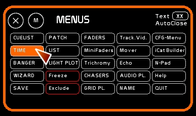
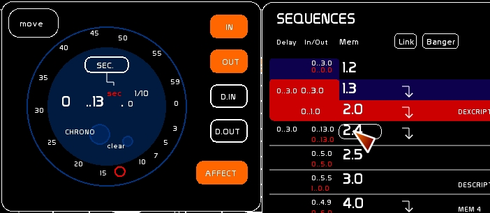
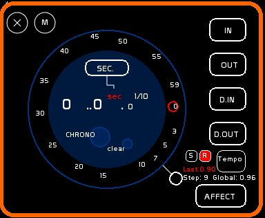

Table des matières
Fenêtre Time
La fenêtre Time permet d'affecter un temps aux contenus qui utilisent les temps.
Time permet d'affecter à une mémoire, un dock et son Lfo, ou un pas de chaser:
- un temps d'attente avant la montée: le Delay In
- un temps de montée: le temps In
- un temps d'attente avant la descente: le Delay Out
- un temps de descente: le temps de Out
Pour accéder à la fenêtre Time, clicker [TIME] ou taper [F6]

Convention d'affichage et syntaxe des temps
- Deux points suivant un chiffre définissent ce dernier comme étant une minute.
- Un point suivant un chiffre définit ce dernier comme étant une seconde.
- Le chiffre suivant ce point exprime le dixième.
Exemple: 3..50.0 veut dire 3 minutes 50 secondes
Cette syntaxe permet de taper dans certains cas les temps au clavier.
Définir un temps

- A la souris:
- clicker [SEC] / [1/100e] ou [MIN] pour basculer la bague de manipulation en mode Seconde, Centième de seconde ou Minute.
- manipuler le curseur rouge et le glisser le long de la bague jusqu'à obtenir la valeur désirée
- Au clavier:
- taper au clavier le temps désiré, exemples:
- 1..0. pour une minute
- 5. pour 5 secondes
- 1.5 pour une seconde 5 centièmes
- 2.20 pour deux secondes 20 centièmes
- taper [CONTROL][ENTER] pour entrer le temps dans la fenêtre Time
- Au chrono:
- clicker le grand cercle [CHRONO] pour lancer ou pauser le chronomètre
- utiliser le petit cercle [clear] pour remettre à zéro le chronomètre
Affecter le temps
- Sélectionner le(s) temps auquel(s) affecter cette valeur
- à la souris: en clickant [IN][OUT] [D.IN] ou [D.OUT]
- au clavier en tapant
- la touche [K] pour le In
- la touche [J] pour le Out
- la touche [L] pour le In et le Out
- [SHIFT][K] pour le Delay In
- [SHIFT][J] pour le Delay Out
- [SHIFT][L] pour le Delay In et le Delay Out
- clicker [AFFECT]
- clicker le receveur (le dock, la mémoire du séquenciel, le pas du chaser) pour affecter ce temps
Version 0.8.2.8 et supérieures: uen façon simplifiée d'entrer ses temps
- Taper le temps
- En sélectionnant les touches [J] [K] ou [L] vous affectez directement le temps en IN / OUT de la mémoire en preset
- [SHIFT] affecte les temps de delay

! En affectant un IN par exemple, vous n'écrasez pas les données OUT D.IN ou D.OUT.
TapTempo
version 0.8.2.2

TapTempo permet sur un cycle variant de 1 à 12 entrées de définir le temps moyen d'un beat que vous frapper à la souris ou via un bouton midi. Tap Tempo est exprimé en secondes. Ce temps est reportable vers le Time Unit d'un chaser.
- Enclenchez l'enregistrement ( il s'agit plus d'un allumage du mode que d'un réel enregistrement ): boite [R]
- Clickez [Tempo]
Une fois que le résultat correspond au rythme que vous cherchez:
- pour envoyer le temps au chaser sélectionné dans la fenêtre chaser, clickez simplement [S]
- pour envoyer le temps à n'importequel chaser, tapez le numéro du chaser puis clickez [S]